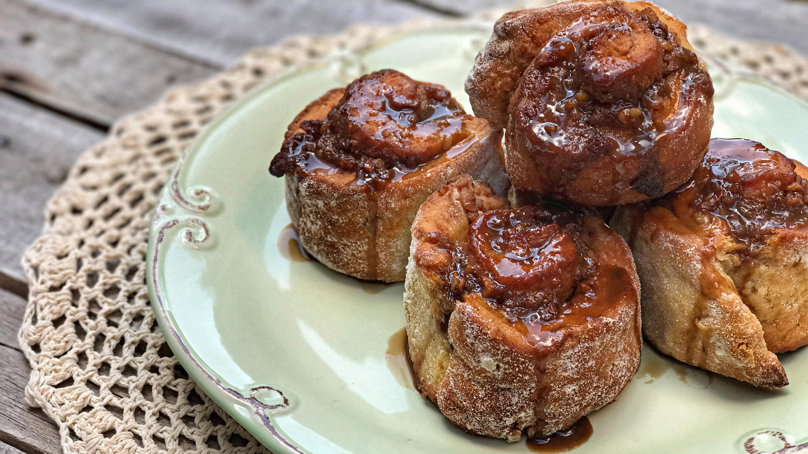
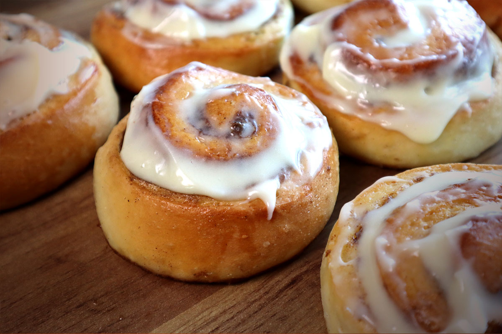

É sem sombra de dúvidas o pão doce favorito do redator deste blog. É a melhor definição de "confort food". Sempre preparo em épocas frias, canela sempre combina com essas temperaturas.
Sua origem vem do Kanelbulle, que é um bolo sueco criado nos anos 20 do século XX. O seu nome significa, em Português, "bolo de canela", embora exista um bolo equivalente conhecido como "caracol", já que tem uma forma em espiral. Foi introduzido numa altura em que existia alguma escassez de ingredientes, em consequência da primeira guerra mundial.
Tradicional
O melhor que pode existir, a foto que ilustra o post é justamente do Cinnamon Roll clássico.
 A melhor comida doce do mundo.Cobertura
Esta é uma maneira de incrementar o Cinnamon Roll, a qual eu não concordo muito, pois detesto cobertura glaceada. Mas acabou se tornando popular e vemos em muitos Cinnamon Rolls por aí.
 Cinnamon Rolls com cobertura.Curiosidade: Em 1999, foi instituído, na Suécia, o dia do kanelbulle. É celebrado no dia 4 de Outubro todos os anos.